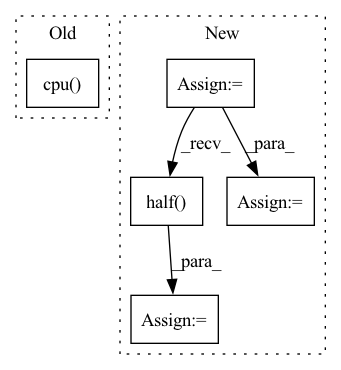

Pattern ID :33174
Before Change
// Cal PSNR
total_psnr += 10. * torch.log10(1. / torch.mean((sr_tensor_y - hr_tensor_y) ** 2))
sr_image_y = sr_tensor_y.mul_(255.0).cpu() .squeeze_(0).squeeze_(0).numpy()
sr_image = np.array([sr_image_y, bic_ycbcr[..., 1], bic_ycbcr[..., 2]]).transpose([1, 2, 0])
sr_image = np.clip(imgproc.convert_ycbcr_to_rgb(sr_image), 0.0, 255.0).astype(np.uint8)
sr_image = Image.fromarray(sr_image)After Change
hr_image = Image.open(hr_image_path).convert("RGB")
hr_image_width = hr_image.width // config.upscale_factor * config.upscale_factor
hr_image_height = hr_image.height // config.upscale_factor * config.upscale_factor
hr_image = hr_image.resize([hr_image_width, hr_image_height], Image.BICUBIC)
lr_image = hr_image.resize([hr_image.width // config.upscale_factor, hr_image.height // config.upscale_factor], Image.BICUBIC)
bic_image = lr_image.resize([hr_image.width, hr_image.height], Image.BICUBIC)
// Extract Y channel lr image data.
lr_image = np.array(lr_image).astype(np.float32)
lr_ycbcr = imgproc.convert_rgb_to_ycbcr(lr_image)
lr_y_image = lr_ycbcr[..., 0]
lr_y_image /= 255.
lr_y_tensor = torch.from_numpy(lr_y_image).to(config.device).unsqueeze(0).unsqueeze(0)
lr_y_tensor = lr_y_tensor.half()
// Extract Y channel bicubic image data.
bic_image = np.array(bic_image).astype(np.float32)
bic_ycbcr = imgproc.convert_rgb_to_ycbcr(bic_image)
// Extract Y channel hr image data.
hr_image = np.array(hr_image).astype(np.float32)
hr_ycbcr = imgproc.convert_rgb_to_ycbcr(hr_image)
hr_y_image = hr_ycbcr[..., 0]
hr_y_image /= 255.
hr_y_tensor = torch.from_numpy(hr_y_image).to(config.device).unsqueeze(0).unsqueeze(0)
hr_y_tensor = hr_y_tensor.half()
// Only reconstruct the Y channel image data.
with torch.no_grad():In pattern: SUPERPATTERN
Frequency: 3
Non-data size: 5
Instances Fragment ID: 95881078
Project Name: lornatang/fsrcnn-pytorch
Commit Name: 5a0ecdd432cc264e98e446689348e5565a84ac1f
Time: 2021-11-19
Author: liuchangyu1111@gmail.com
File Name: validate.py
M Class Name: AnonimousClass
N Class Name: AnonimousClass
M Method Name: main(0)
N Method Name: main(0)
M Parent Class:
N Parent Class:
M File Name: validate.py
N File Name: validate.py
M Start Line: 53
M End Line: 95
N Start Line: 63
N End Line: 98
Before Change
gain = 1.0
scale = 1.0
if "ln_" in n or ".ln" in n or "time_" in n or "_mask" in n:
m[n] = p.cpu()
continue
elif n == "emb.weight":
scale = -25 * self.args.lr_init
else:After Change
else:
nn.init.orthogonal_(m[n], gain=gain * scale)
m[n] = m[n].cpu()
if os.environ["RWKV_FLOAT_MODE"] == "fp16":
m[n] = m[n].half()
elif os.environ["RWKV_FLOAT_MODE"] == "bf16":
m[n] = m[n].bfloat16()
// if n == "emb.weight":
// print(m[n]) Fragment ID: 95881059
Project Name: blinkdl/rwkv-lm
Commit Name: cdb098c0e057e75082e2785972219f320fb4e282
Time: 2022-09-05
Author: a@a.com
File Name: RWKV-v4neo/src/model.py
M Class Name: RWKV
N Class Name: RWKV
M Method Name: generate_init_weight(1)
N Method Name: generate_init_weight(1)
M Parent Class: pl.LightningModule
N Parent Class: pl.LightningModule
M File Name: RWKV-v4neo/src/model.py
N File Name: RWKV-v4neo/src/model.py
M Start Line: 336
M End Line: 376
N Start Line: 335
N End Line: 382
Before Change
// Cal PSNR
total_psnr += 10. * torch.log10(1. / torch.mean((sr_tensor_y - lr_tensor_y) ** 2))
sr_image_y = sr_tensor_y.mul_(255.0).cpu() .squeeze_(0).squeeze_(0).numpy()
sr_image = np.array([sr_image_y, lr_ycbcr[..., 1], lr_ycbcr[..., 2]]).transpose([1, 2, 0])
sr_image = np.clip(imgproc.convert_ycbcr_to_rgb(sr_image), 0.0, 255.0).astype(np.uint8)
sr_image = Image.fromarray(sr_image)After Change
// Extract Y channel hr image data.
hr_image = np.array(hr_image).astype(np.float32)
hr_ycbcr = imgproc.convert_rgb_to_ycbcr(hr_image)
hr_y_image = hr_ycbcr[..., 0]
hr_y_image /= 255.
hr_y_tensor = torch.from_numpy(hr_y_image).to(config.device).unsqueeze(0).unsqueeze(0)
hr_y_tensor = hr_y_tensor.half()
// Only reconstruct the Y channel image data.
with torch.no_grad():
sr_y_tensor = model(lr_y_tensor) Fragment ID: 95881056
Project Name: lornatang/vdsr-pytorch
Commit Name: 4a9bc788a52873e287460db8207a3c5dd5543870
Time: 2021-11-19
Author: liuchangyu1111@gmail.com
File Name: validate.py
M Class Name: AnonimousClass
N Class Name: AnonimousClass
M Method Name: main(0)
N Method Name: main(0)
M Parent Class:
N Parent Class:
M File Name: validate.py
N File Name: validate.py
M Start Line: 66
M End Line: 84
N Start Line: 66
N End Line: 95